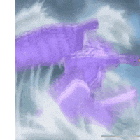

썸네일 하나로 요약 가능한 나루토.jpg
댓글
최종이 가이면 그래도 생체 핵미사일정도는 되지않나
가이가 쎈거지 록리는좆밥
타고난 재능 없어서 그거 못 배움
팔문 다 여는 것도 재능이야
가이는 본인이 잘 안쓸뿐 인술도 쓰지 않던가 ㅋㅋㅋㅋ 스승이 비틱이네
원래 록리가 가이만큼 강해지는 서사가 있어야 했던거 같은대 작가가 생각해도 말이 안되는지 걍 가이만 똥꼬쇼하고 가이는 끝까지 ㅈ밥ㅋㅋ
저기에 휠체어 타고 다니는 록리 스승도 넣어주지
생각해보니까 밤가이 한방에 저새끼 바로 쩌리로 잊혀져버림
6문까진 마음대로 열수있으니 아침 공작 까진 쓴다면 그래도 꽤 강한편은 맞을수도
"육문이면 떡을 치겠군"
록리는 밤가이 못함?
본인피셜 6문 개방이 한계라더라
록리는 가이가 아니잖아 ㅋㅋㅋ
밤가이 생각해보면 노력과 재능 밸런스 잘 맞춘듯
노력으로 시작해서 혈통으로 끝난
웃었다.
차라리 록리가 마지막에 8문열고 죽었어야했는데

혈통 눈알 만화
밤가이 서사는 록리가 맡았어야 했는데... 진작 가이 죽고 각성해서 7문 열어 활약하고, 최종전에선 8문 열고 마다라와 격돌. '인술도 환술도 없이 체술만으로 자신의 가치를 증명하겠다!'란 어릴 적 다짐이 오버랩되면서 낭만뽕 때려박기.
하지만 록리 같은 좆밥 따위 유기한지 오래라 빌드업도 안 쌓아서 마지막까지 버려짐.
"열심히 좆뺑이 쳐보라니깐ㅋㅋㅋ"